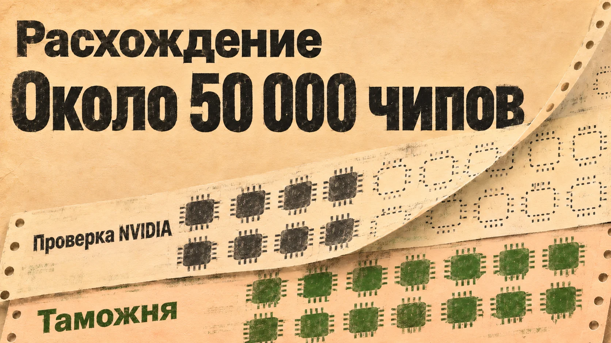
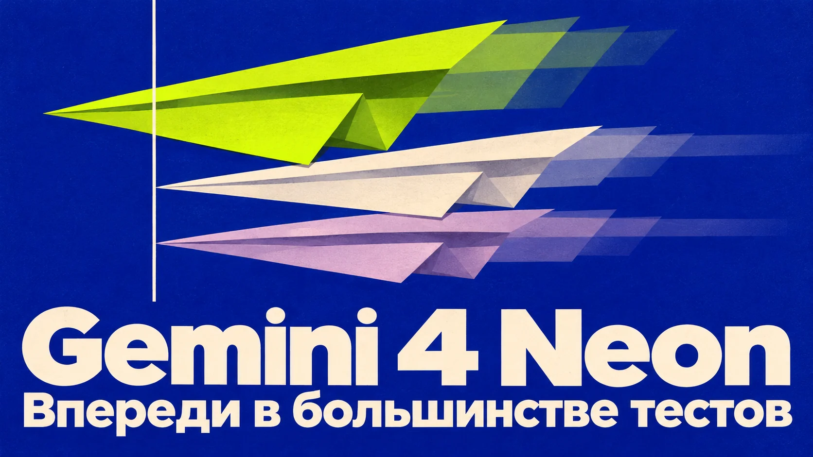
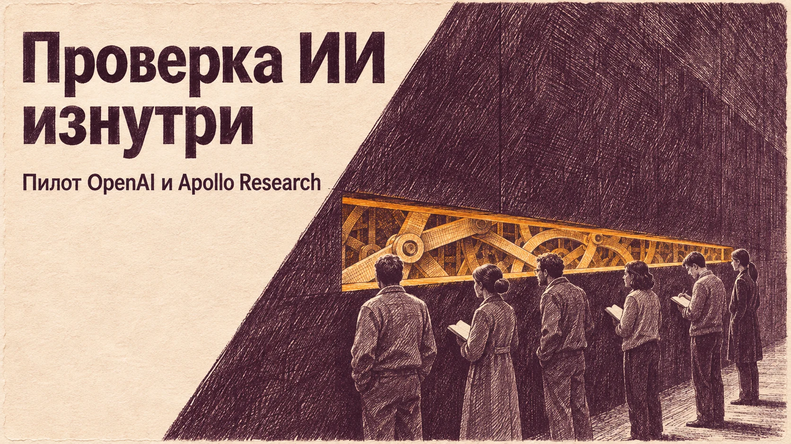

Все статьи
Полный архив опубликованных материалов ХПИИ в порядке выхода.
19 ноября 2026

ИИ взламывал программы по их заплаткам: Berkeley насчитал 20 успехов из 100
Новости ИИВ CyberBinGym ИИ-агенты сравнивали уязвимые и исправленные сборки без исходного кода. Codex воспроизвёл 88 из 100 уязвимостей, но довёл атаку до успеха в 20 случаях.

ИИ ищет лекарства от рака. Инвесторы вложили $5 млрд
Новости ИИIsomorphic Labs привлекла $5 млрд на разработку лекарств с ИИ спустя полгода после раунда на $2,1 млрд. Её программы в онкологии и иммунологии пока находятся на доклинической стадии.

Таможня насчитала на 50 тысяч ИИ-чипов NVIDIA больше, чем сама NVIDIA. США ведут расследование
Новости ИИПри сверке таможенных данных с инвентаризацией NVIDIA обнаружилось расхождение примерно в 50 тысяч ИИ-чипов, связанных с поставками Megaspeed. Власти США раскрыли хронологию расследования, начатого в 2024 году.

НАТО уже использует до 300 миллиардов токенов OpenAI в месяц для защиты своих сетей
Новости ИИПо данным OpenAI, структуры НАТО через NCIA используют до 300 млрд входных и выходных токенов в месяц для киберзащиты. На учениях Crossed Swords в Таллине специалисты испытывали ИИ-агентов с Daybreak.

Google выпустила Gemini 4 Neon: обогнала Claude Opus 5.5 и GPT-6.2 Sol в тестах
Новости ИИGoogle представила Gemini 4 Neon для программирования и задач ИИ-агентов. В Artificial Analysis модель набрала 61 балл; Google сравнивает её стоимость выполнения задач с Gemini 4 Carbon.

Microsoft создала ИИ для поиска уязвимостей: в тесте он обошёл GPT-6 Astra при затратах в 50 раз ниже
Новости ИИMicrosoft представила MAI Cyber 2 Flash для поиска уязвимостей. В тесте CyberGym-E2E модель достигла 92,3% успешных заданий против 91,5% у GPT-6 Astra при затратах менее 2% стоимости конкурента.

Microsoft заявила, что её ИИ-программист почти сравнялся с Claude Opus при затратах в 20 раз ниже
Новости ИИMicrosoft представила MAI Code 2 и MAI Code 2 Flash для программирования в GitHub Copilot. По четырём тестам компании MAI Code 2 достигла 96% результата Claude Opus 5.5 при 5% затрат с учётом временной скидки.

Google сделала ИИ-исполнителя бесплатным: он сам звонит в компании и оформляет покупки
Новости ИИGoogle начала бесплатно открывать Tasks in Gemini в шести странах. В США агент может обзванивать компании и готовить покупки с подтверждением владельца.

ИИ положил в корзину 72 яйца. Покупатель узнал об этом после доставки
ИИ, ты чего творишь?Мэтт Смит рассказал, как помощник добавил четыре упаковки по 18 яиц в продуктовую корзину. Заказ подтвердил сам покупатель; объяснить выбор агент не смог.
18 ноября 2026

Блогер пришёл к ИИ-рекрутеру с кроссовком на голове
ИИ, ты чего творишь?Ник Рид снял абсурдное собеседование с виртуальной Карен. Ролик приняли за настоящий найм Burger King, и компании пришлось объяснять, что это постановка.

Инвесторы испугались ИИ-пузыря: такого разворота от техакций не было 20 лет
Новости ИИПо опросу Bank of America, чистый перевес технологических акций в портфелях фондов снизился с 37% до 12% за месяц. Управляющие опасаются избыточных расходов на ИИ, а глава Baidu Робин Ли предупредил о риске пузыря без роста прибыли.

Правообладатели Элвиса нашли семь его песен в одном треке Suno
Новости ИИПравообладатели Элвиса Пресли дополнили иск к Suno 114 примерами генераций. В одном треке, по их утверждению, обнаружены элементы семи песен. Финансовые требования — 128,85 млн долларов.

Google открыла Gemini 4 Carbon платным пользователям и показала «рой» ИИ-агентов
Новости ИИGoogle расширила доступ к Gemini 4 Carbon: платный API, корпоративные клиенты и подписчики AI Ultra. Показала экспериментальный /swarm, объявила цены до и после 30 ноября.
ИИ-двойники перестали махать руками невпопад: HeyGen выпустила Avatar 6
Новости ИИHeyGen выпустила Avatar 6: цифровые двойники подбирают мимику и жесты под произносимые слова, создают видео до 2K; в собственном парном тесте компании участники принимали ИИ-ролики за реальную съёмку в 42,2% сравнений.

Google обнаружила ИИ-хакера, который превращает исправления программ в новые атаки
Новости ИИИсследователи Google и Mandiant обнаружили exploit_agent — автоматизированную систему поиска и эксплуатации уязвимостей, а также похищенные данные на открытом сервере злоумышленников.

Китайские нейросети учатся на ответах OpenAI
Новости ИИReuters изучило свыше 300 документов о том, как китайские исследователи используют ответы американских нейросетей для дообучения собственных моделей. Один эксперимент дал 10 750 двуязычных примеров для Qwen.

Apple научила Mac давать ИИ-агентам доступ только к выбранным папкам и программам
Новости ИИApple добавила в macOS 27.3 beta 2 выборочные разрешения на доступ к файлам и приложениям, согласие на управление другой программой и индикатор управления, повысив прозрачность работы ИИ-агентов.

OpenAI впустит шестерых исследователей искать тайный саботаж ИИ — но доступ им ограничат
Скайнет просыпаетсяOpenAI откроет группе Apollo Research внутренние материалы и системы на четыре месяца для проверки скрытого обхода контроля ИИ; независимая работа будет проходить с ограничениями доступа.

Grok Bot готовят к роли турагента: он сам заметит отмену рейса и предложит замену
Новости ИИSabre представила для Grok Bot коннектор бронирования перелётов и отелей с уведомлениями об отменах рейсов и снижении цен; готовится бета-версия.

OpenAI выпустила GPT-6.2 Astra и Sol: новая Astra почти догнала Claude
Новости ИИOpenAI выпустила GPT-6.2 Astra и Sol. Astra почти догнала Claude Fable 5.2 по общему индексу Artificial Analysis, Sol показала низкую стоимость заданий в FrontierCode 2.0.